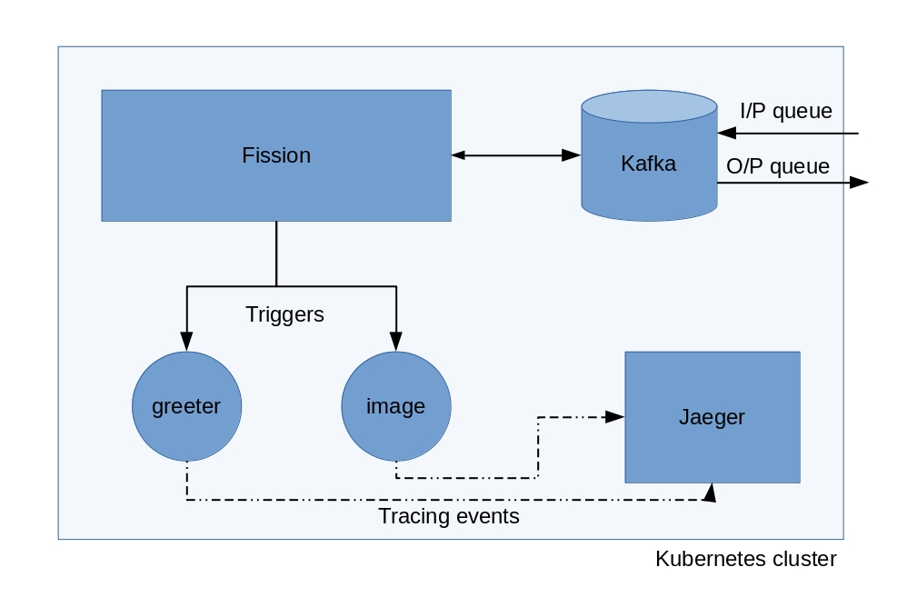

Distributed tracing and FaaS?
Tracing Fission functions with Jaeger
Bhavin Gandhi
bhavin192[at]geeksocket.in
Microservices?
- Treating services as products
- More easy to manage
- What about debugging things?
Monitoring
Is the service working?
Let's keep checking for that
Up for Microservices?
They are never 100% up
Nines don’t matter if users aren’t happy.
Observability
Being able to get view of system
Helps to understand your system
Stop reverse engineering applications and start monitoring from the inside.
Pillars of Observability
- Logging
- Metrics monitoring
- Tracing
Logging
Events, errors occurred in applications
The limits of logging
Signal to noise ratio
Serve for problems predicted in advanced
Metrics monitoring
Numerical information about what's happening
Help to predict the behavior
Tracing
Path taken by an user's request
Connecting individual components
Tracing in Serverless/FaaS
- Abstracted infrastructure
- Shortlived nature of functions
Introducing GaS
Greetings as Service
- Frontend
- Two Functions
- Greeter
- Image
- Using Kafka in between
Components of GaS

Functions on Kubernetes
- Fission
- Kubernetes native
Fission functions
- Function code
- One entry point
Fission function environments
- Container images
- Available for most of the languages
- Extensible
Function trigger
- Actions to invoke function execution
- Supports HTTP and message queues
Introducing detectives
Image credits: CNCF Branding & Zipkin Community: Logos
Tracing backends
- Collecting the trace events called spans
- Storing as well as visualization of those events
How to collect these events?
- Instrumenting your code
- Client libraries built according to OpenTracing standards
Let's trace things
- Instrumenting each function's code?
- Environments to the rescue
Modifying the Python environment
- Uses Flask as HTTP server
server.pyloads user defined functionsDirectory structure
./python-env ├── Dockerfile ├── lib │ ├── __init__.py │ └── tracing.py ├── README.md ├── requirements.txt └── server.py
/specialize in server.py
from lib.tracing import initialize_tracing … @self.route('/specialize', methods=['POST']) def load(): # load user function from codepath userfunc = … # Wrap userfunc with tracing instrumentation self.userfunc = initialize_tracing(userfunc) return ""
initialize_tracing in lib/tracing.py
def initialize_tracing(func): def inner(): … func_resp = func() return func_resp return inner
Creating the tracer object
def inner(): … tracer = _init_tracer(fission_func_name) … return func_resp
Starting the trace event using with block
def inner(): … with tracer.start_span(span_name, child_of=span_ctx) as span: … func_resp = func() return func_resp
Visualization in Jaeger
- Spans are not linked together
- faas-tracing-1.mp4
Spans of greeter function
Spans of image function
Linking spans together
- Context propagation
- Passing context over the wire
extract operation
Incoming request to the function
… trace-id: 1234abcd
- Create object of span context using
tracer.extract() - Start a new span with span context as parent
tracer.start_span()
inject operation
- Create headers for further requests made by user code
tracer.inject() - Save the current span and new headers in Flask's global
g
Context propagation in tracing.py
def inner(): … span_ctx = tracer.extract(Format.HTTP_HEADERS, request.headers) with tracer.start_span(span_name, child_of=span_ctx) as span: … generated_headers = dict() tracer.inject(span, Format.HTTP_HEADERS, generated_headers) # User may want to set tags on span or use the generated_headers g.span = span g.generated_headers = generated_headers … func_resp = func() return func_resp
Modifying Kafka MQT of Fission
More about MQT of Fission
- New records are sent as HTTP request to functions
- No support for Kafka record headers

Running the service again


Wrong timestamps on spans
- ClockSkew adjustments
- Using
FOLLOWS_FROMreference instead CHILD_OF
Adding support for references in jaeger-client-python

Modified tracing.py
span_ctx = tracer.extract(Format.HTTP_HEADERS, request.headers) # passing it as reference instead of child_of relation as we # have async calls to services span_reference = follows_from(referenced_context=span_ctx) with tracer.start_span(span_name, references=span_reference) as span: … return response


tracer.close() from jaeger-client-python
- Spans are submitted asynchronously
tracer.close()is not fully synchronous- #229 (comment), #50 (comment)
Debugging an issue in GaS
Watch out for these
- Use 128bit trace Ids as we may encounter duplicate trace Ids
- While working with asynchronous applications use
FOLLOWS_FROMreference - Using TCP or HTTP to send the tracing events instead of UDP
Questions
References
- GaS is inspired by PacktPublishing/Mastering-Distributed-Tracing/Chapter04
- Mastering Distributed Tracing by Yuri Shkuro
- Cloud Native DevOps With Kubernetes by John Arundel & Justin Domingus
- https://www.jaegertracing.io
- https://fission.io
bhavin192[at]geeksocket.in
These slides are released publicly under
Creative Commons Attribution-ShareAlike 4.0 International (CC BY-SA 4.0)